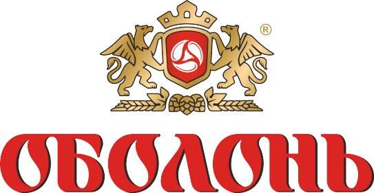
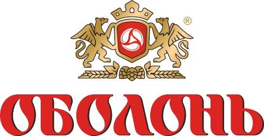

Будівництво ЗАВів та КЗС під ключ
Первинна підготовка врожаю зернових культур є невід'ємним процесом у виробництві якісних продуктів сільського господарства. Від очистки та підготовки зерна багато в чому залежать тривалість зберігання та якісні показники товару.

Зерноочисні комплекси (ЗАВ) призначені для попередньої, первинної очистки та калібрування насіння зернових і зернобобових культур (ячменю, пшениці, жита, гречки, кукурудзи, проса, гороху, соняшнику, ріпаку, сої) від різного роду домішок, лушпиння, насіння бур'янів відразу після збирання врожаю на механізованих зерноочисних лініях зернопереробних підприємств.
Комплекси зерноочисні (КЗС) виробляють комплексну підготовку (очистку та сушку) різних видів зернових для подальшої його переробки, зберігання на складах або силосних сховищах.
Компанія «Будагроплюс» надає повний перелік послуг з будівництва ЗАВів і КЗС під «ключ». Сюди входить проектування комплексів, будівельні роботи, монтаж будівельних конструкцій, автоматизація роботи, проведення пуско-налагоджувальних робіт, введення об'єкта в експлуатацію, навчання обслуговуючого персоналу.
Застосування нових технологій очистки зерна при будівництві зерноочисних комплексів істотно покращує показники якості обробки зерна, при цьому значно знижуються енерговитрати на одиницю переробленої продукції.
Проектування зерноочисних комплексів ЗАВ і КЗС
Наша компанія має успішний багаторічний досвід співпраці з провідними проектними інститутами та фірмами, які спеціалізуються на створенні проектів зерноочисних комплексів.
Інженери- проектувальники на вищому рівні проведуть всі роботи з проектування та розробки всієї необхідної документації, що відповідає сучасним нормам і стандартам.
Навчання персоналу
Проводиться комплексне та всеохоплююче навчання персоналу, що обслуговує зерноочисний комплекс. Після проходження курсу навчання оператори будуть володіти всіма необхідними знаннями з експлуатації, обслуговування і ремонту основних вузлів комплексу.
Монтаж конструкцій ЗАВ та КЗС.
Фахівці компанії «Будагроплюс» проведуть всі необхідні роботи з монтажу конструкцій ЗАВ і КЗС із застосуванням сучасних технологій обробки метала та нових конструкційних матеріалів, а саме:
- будівництво завальних ям для заднього та бічного розвантаження автотранспорту за допомогою естакади або гідравлічного розвантажувача;
- будівництво проїзних завальних ям;
- монтаж навісів над завальними ямами;
- монтаж системи транспортування зерна;
- монтаж та введення в експлуатацію системи аспірації;
- а також установка сучасного обладнання автоматизації (шаф автоматизації, пультів керування, систем сигналізації та пожежної безпеки). Також проводиться підключення обладнання до джерел живлення, пультів керування та весь комплекс необхідних пуско-налагоджувальних робіт, введення об'єкта в експлуатацію.
Підготовка виробничих майданчиків
Ми проводимо повний перелік підготовчих робіт з будівництва виробничих майданчиків зерноочисних комплексів. Сюди входять:
- знесення старих будівель;
- розчистка території;
- розробка котлованів;
- бетонування майданчиків;
- будівництво опорних колон;
- підключення необхідних комунікацій;
- монтаж конструкцій ЗАВ і КЗС.


 
